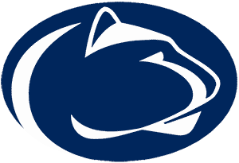

Atlantic Hockey America

Penn StatePenn State is 12-4-0 and 8th in the NPI. Across 500 simulated seasons its median NPI finish is 6th, with a 95% range of 3rd to 11th. ELO expects about 8 wins in the next 10.
Next 10 games
- Fri, Nov 27at Boston College83%
- Sat, Nov 28
 at Minnesota42%
at Minnesota42% - Fri, Dec 4
 vs Syracuse91%
vs Syracuse91% - Sat, Dec 5vs Syracuse91%
- Wed, Dec 9
 at Princeton51%
at Princeton51% - Fri, Jan 1
 vs Cornell74%
vs Cornell74% - Sat, Jan 2vs Cornell74%
- Wed, Jan 6vs Princeton65%
- Fri, Jan 15
 at Robert Morris90%
at Robert Morris90% - Sat, Jan 16at Robert Morris90%
Win chances from ELO; the dot is stronger the more lopsided the game.
Projected NPI finish
500 simulated seasons, remaining games decided by ELO win chances. Dashed line: median. Shaded: 95% range.